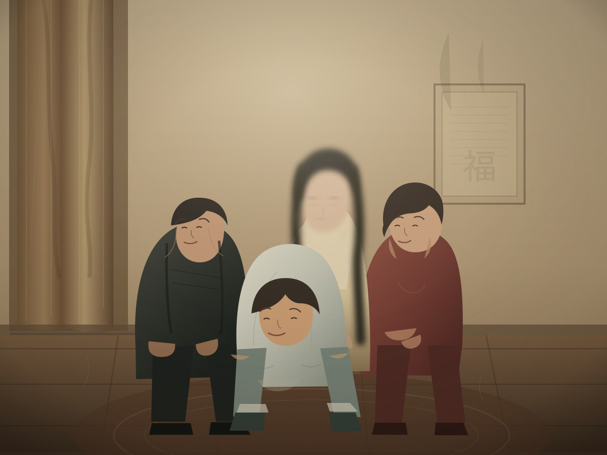
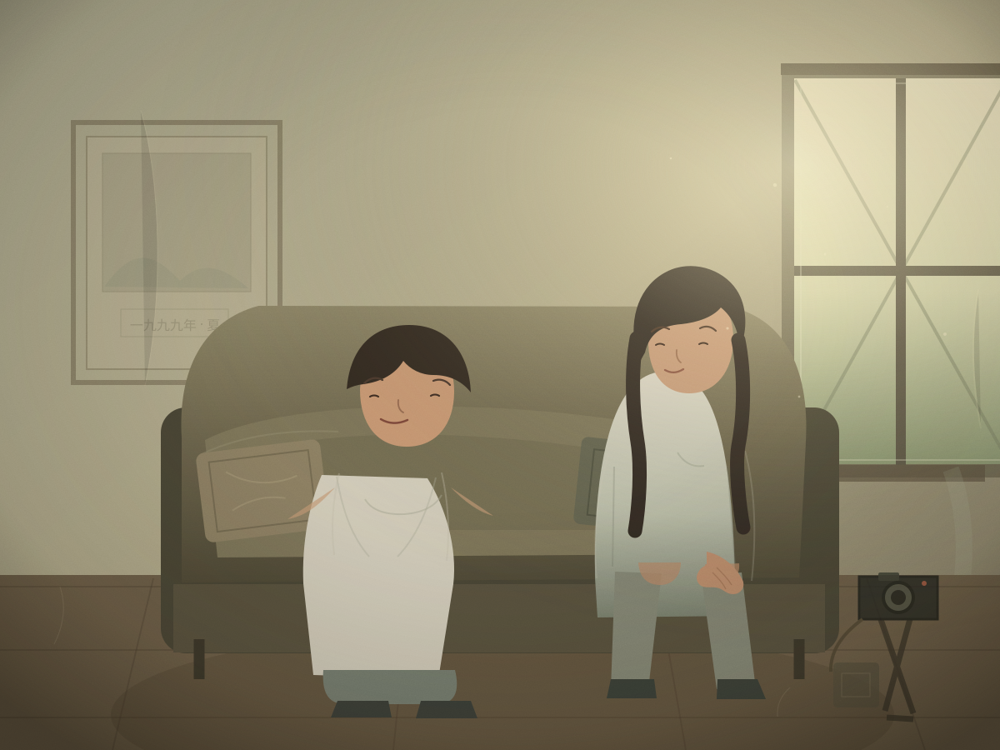
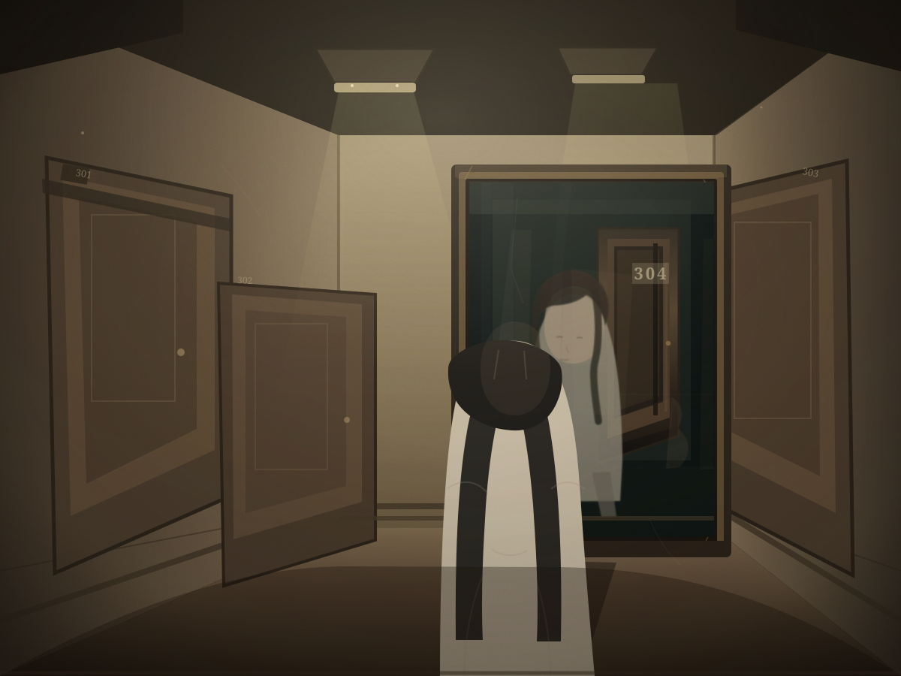
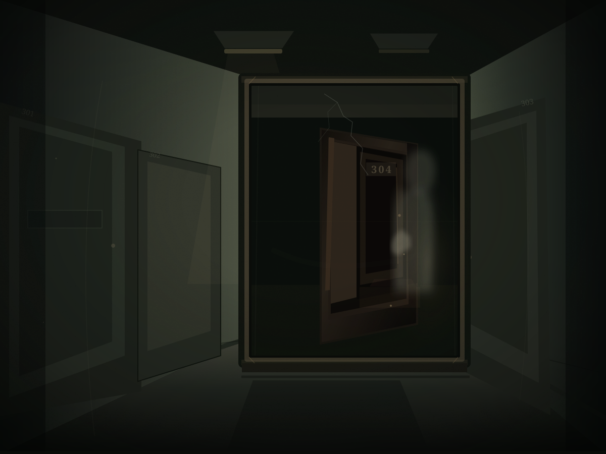

FILE 04 / FAMILY PHOTOGRAPHS
许家旧照片
四张照片，拍摄于1999年至2001年之间。相册内页已经散失，相纸背面留下了字迹。 点开照片，可以翻转查看背面。
四张照片按拍摄时间排列。相纸有不同程度的褪色，人物面部的清晰度并不一致。
点击相片检视 / 可查看背面
1999年春节 · 全家福
01 / 04室内闪光灯 / 四人合影 / 背面有字

2000年夏天 · 客厅
02 / 04午后 / 窗边 / 背面有字

2001年春天 · 走廊尽头
03 / 04镜面 / 门牌 / 可局部放大

2001年6月17日 · 凌晨
04 / 04空走廊 / 镜中人影 / 背面有字
相册来源：陈芸保存的旧盒子 / 扫描件未做面部修复
QSL-PHOTO / 01—04